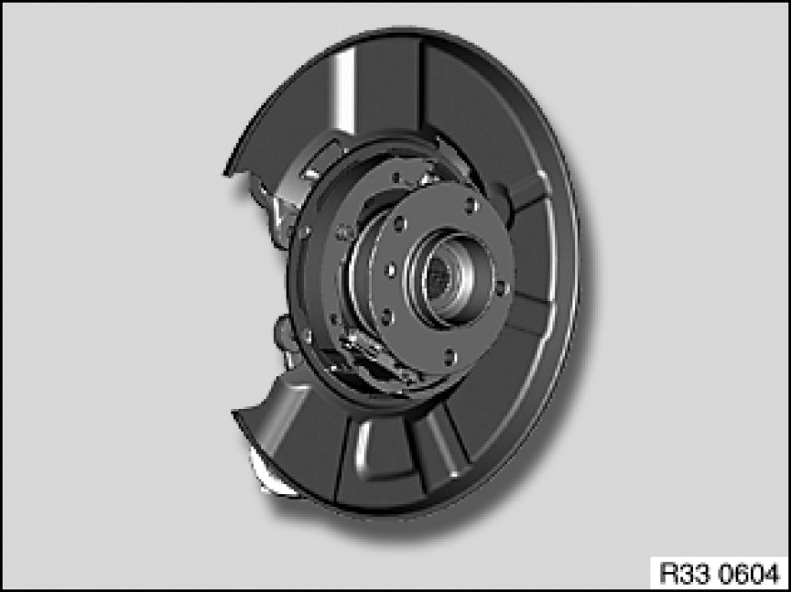

Rear Knuckle: Service and Repair
33 32 131 - Removing and installing / replacing a steering knuckle / wheel carrier

Necessary preliminary tasks:
- Remove output shaft
- Remove brake disc 34 21 320 Removing and Installing/Renewing Both Brake Discs
- Replacement only: drive out drive flange for rear axle shaft
- Disconnect handbrake Bowden cable from expander lock 34 41 120 Removing and Installing or Replacing Both Handbrake Bowden Cables
- Remove pulse generator from wheel carrier 34 52 535 Replacing A Rear Pulse Sensor
- Remove coil spring 33 53 000 Removing and Installing / Replacing Rear Left or Right Coil Spring
- Remove rubber mount/shock absorber on camber arm 33 52 031 Replacing Rear Left or Right Rubber Mount For Shock Absorber Mounting

Secure wheel carrier against falling out.
Remove stabilizer link from wheel carrier [1][2]33 55 040 Replacing Anti-Roll Bar Links For Stabilizer Bar.
Remove trailing arm from wheel carrier 33 32 021 Replacing Left or Right Trailing Arm.
Remove guide arm from wheel carrier 33 32 091 Replacing A Control Arm.
Remove toe arm from wheel carrier 33 32 180 Removing and Installing/Replacing Left or Right Toe Arm.
Remove upper control arm from wheel carrier 33 32 071 Replacing an Upper Wishbone.
Remove camber arm from wheel carrier 33 32 190 Removing and Installing/Replacing Left Or Right Camber Arm.
Remove wheel carrier.

Important!
- Check sensor head and line from pulse generator prior to installation for external damage, replacing if necessary.

Replacement:
- Modify or replace handbrake shoes 34 41 220 Removing and Installing/Renewing All Parking Brake Shoes
- Modify or replace expander lock 34 41 250 Removing and Installing/Replacing Expander For Parking Brake Shoes
- Modify or replace brake carrier/brake guard plate 34 21 173 Replacing Rear Left (or Right) Brake Carrier
After installation:
- Adjust handbrake
- Perform chassis alignment check